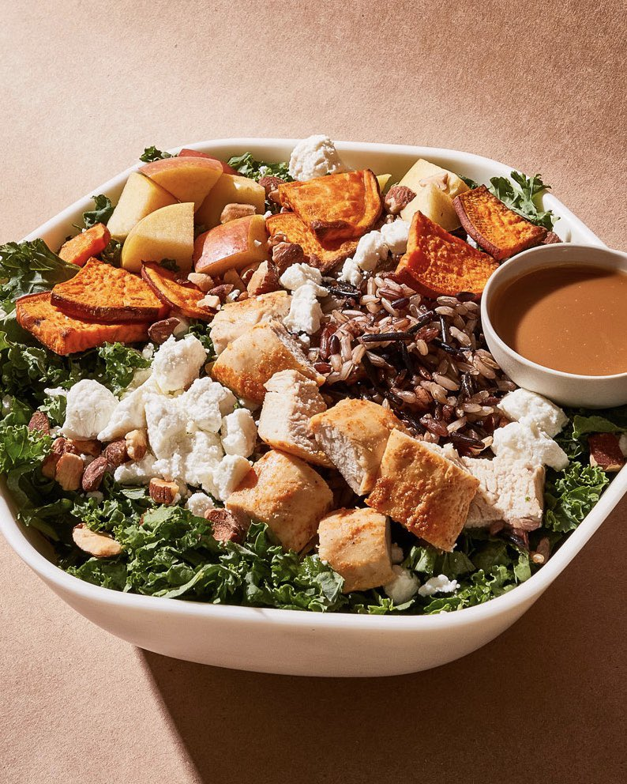

Harvest Bowl

Description
Ingredients
- 1 sweet potato, chopped
- 3-4 cups kale, chopped
- 1.5-2 cups cooked wild rice (quinoa works too!)
- 1 cup cooked chicken (I usually just get a rotisserie chicken and shred that up!)
- 1 apple, chopped
- 4 oz goat cheese
- 1/2 cup slivered almonds
- 1/2 cup balsamic vinegar
- 3 tbsp mustard
- 1 tbsp honey
- 1/2 cup olive oil
- salt and pepper
Steps
- Preheat the oven to 400 degrees.
- 2. Wash and cut the sweet potato in half lengthwise. Cut each half lengthwise one more time, and then cut into thin slices, as pictured.
- 3. Add the sweet potatoes to a baking sheet lined with parchment paper. Spray with a little oil and season with salt and pepper. Roast for 40 minutes.
- 4. Cook your wild rice according to the package instructions. (I used a wild rice/brown rice mix!)
- 5. Wash the kale and remove the stems. Cut the leaves into thin bite sizes pieces. (Think chopped salad!)
- 6. Cut your cooked chicken and apple, and pull the goat cheese and slivered almonds out.
- 7. In a jar or measuring cup, combine balsamic vinegar, olive oil, honey, mustard, and salt and pepper. Whisk to combine.
- 8. When the sweet potatoes and wild rice are done cooking, it’s time to assemble! Start with about 1-2 cups of kale. Add 1/3 cup of wild rice, and as much chicken, apples, goat cheese, and almonds as you prefer.
- 9. Pour the dressing over the portion you are going to eat and stir to combine. Enjoy!